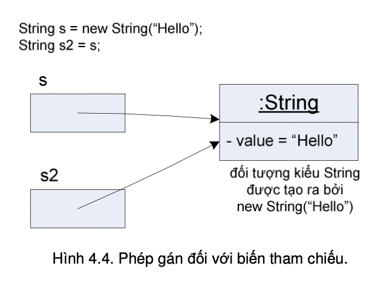

Cũng như ta có thể gán một giá trị mới cho một biến kiểu cơ bản, ta cũng có thể dùng phép gán để chiếu một biến tham chiếu tới một đối tượng khác khi cần, miễn là đối tượng đó phải thuộc cùng kiểu.
Thể hiện đúng bản chất của tham chiếu đối tượng, và hoạt động sao chép nội dung của phép gán, phép gán xảy ra giữa hai biến tham chiếu không có tác dụng sao chép nội dung của đối tượng này sang đối tượng khác. Phép gán chỉ sao chép chuỗi bit của biến tham chiếu này sang biến tham chiếu kia. Kết quả là biến tham chiếu ở vế trái được trỏ tới đối tượng mà biến/biểu thức tham chiếu tại vế bên phải đang chiếu tới.
Hình 4.4 minh họa kết quả của một phép gán biến tham chiếu. Biến String s2 sau khi nhận giá trị của s thì chiếu tới cùng một đối tượng String mà s khi đó đang chiếu tới. Phép gán đối với các biến tham chiếu không tạo ra một bản sao của đối tượng. Vậy nếu ta muốn sao chép nội dung đối tượng thì làm thế nào? Vấn đề này sẽ được nói đến trong Chương 9.
Hình 4.4. Phép gán đối với biến tham chiếu.